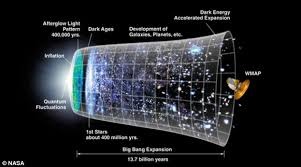

|

Evrenin Genişlemesi
Evrenin genişlemesi, kozmolojinin en temel gerçeklerinden biridir ve evrenin sabit, durağan bir yapıda olmadığını; aksine zamanla sürekli genişlediğini
ifade eder. Bu olgu, ilk kez 1929 yılında Amerikalı astronom Edwin Hubble tarafından yapılan gözlemlerle kanıtlanmıştır.
Hubble, uzak galaksilerin ışığının kırmızıya kaydığını fark etti. Bu kırmızıya kayma, galaksilerin bizden uzaklaştığını ve aralarındaki mesafenin arttığını
gösteriyordu. Yani, evrenin her noktasından bakıldığında tüm galaksiler birbirinden uzaklaşıyor gibi görünüyordu. Bu durum, evrenin kendisinin genişlediği
anlamına gelir.
Evrenin genişlemesi, uzaydaki boşluğun “içine yeni madde eklenmesi” şeklinde değildir; tam tersine, uzayın kendisinin esnemesi ve galaksilerin bu esneme
nedeniyle birbirinden uzaklaşmasıdır. Bu fikir, Büyük Patlama (Big Bang) teorisiyle doğrudan ilişkilidir. Yaklaşık 13,8 milyar yıl önce evren son derece
yoğun ve sıcak bir noktadan genişlemeye başlamıştır.
Son yıllarda yapılan gözlemler, evrenin genişlemesinin yavaşlamadığını, aksine hızlandığını göstermektedir. Bu beklenmedik hızlanmanın nedeni tam olarak
bilinmemekle birlikte, bilim insanları bunu karanlık enerji adı verilen gizemli bir kuvvetle açıklamaktadır.
Özetle, evrenin genişlemesi, uzayın dinamik ve değişken bir yapıda olduğunu kanıtlar. Bu genişleme, evrenin geçmişini anlamamızı sağladığı gibi, gelecekte
nasıl bir sona ulaşacağı —örneğin sürekli genişleyip dağılma mı, yoksa bir gün tekrar büzülme mi yaşayacağı— konularında da önemli ipuçları verir.
|